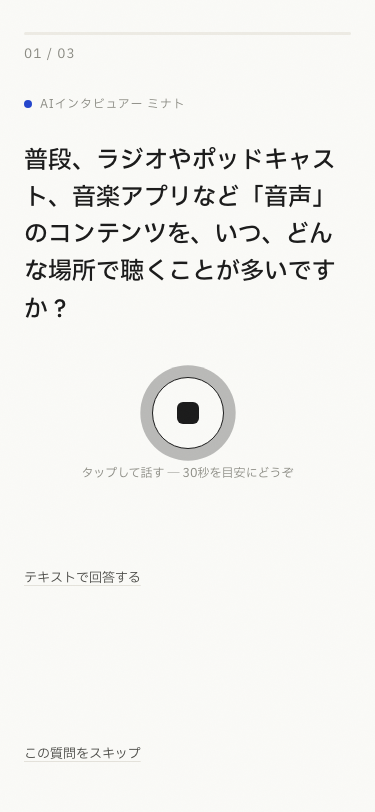
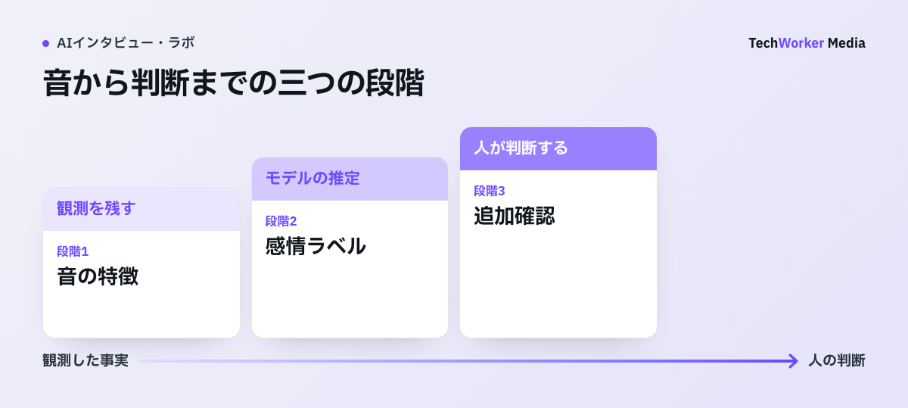
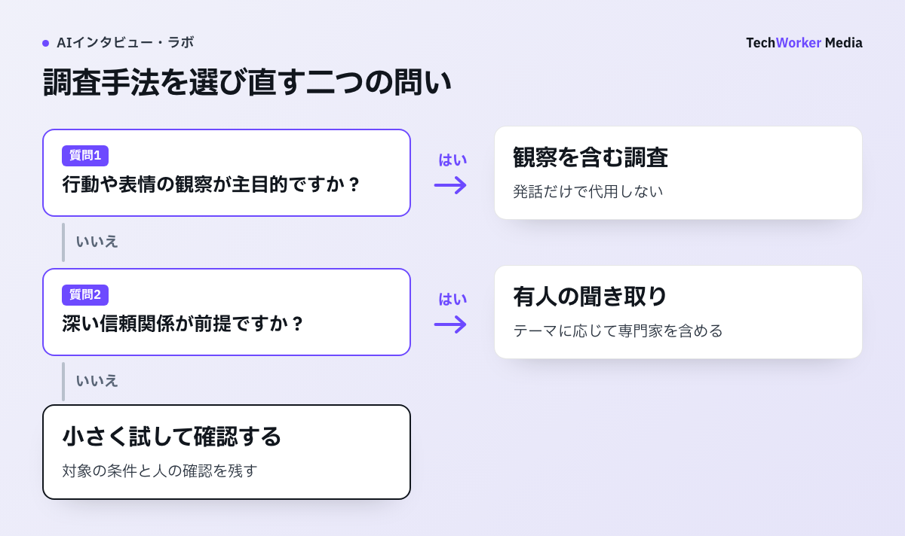

公開済み実画面：CoeSignal回答画面（2026年10月6日確認）

AIインタビューに残る5つの限界と、守備範囲外の1点
非言語情報の欠落、脱線への弱さ、ラポール、AI慣れの差、深掘りのばらつきの5つです。
この記事は、AIインタビュープラットフォーム「CoeSignal」を提供する当社が書いています。自社サービスの手法そのものの限界を開示する記事です。限界を知らずに導入すれば、調査の精度で失敗します。限界を過大に見積もれば、有効な手段を捨てることになります。
AIインタビューは、AIがモデレーター（聞き手役）として回答者一人ずつに質問し、答えに応じて深掘りする定性調査の手法です。同時並行・24時間の実査という強みの裏側に、人間のモデレーターを置き換えたことによる弱みがあります。
- 非言語情報が取れません。表情・視線・沈黙の質・場の空気が記録に残りません。
- 想定外の脱線を安定して扱える根拠が不足しています。設計外の発言を調査の新しい焦点にするかは、人の中間レビューへ戻します。
- ラポール（信頼関係）が必要なテーマには慎重な選定が要ります。研究では人への信頼が高い一方、自己申告の開示親密度には差がありませんでした。関係構築が調査目的なら、人を候補に残します。
- 回答体験への慣れに差があります。機械へ話すことへの戸惑いは運用上確認しますが、AI利用経験と発話の短さを結び付ける一般則とは扱いません。
- 深掘りの質にばらつきがあります。追質問が浅い回に当たると、「なぜ」が掘り切れないまま終わります。
この5つとは別に、代表性のある定量推定は手法の守備範囲外です。「市場の何%が支持するか」という割合の推定や統計検定には、標本設計された定量調査を使います。
5つの限界には、設計と運用の打ち手があります。守備範囲の外のことをAIインタビューに期待してはいけません。打ち手のある限界を理由に、手法ごと捨てるのも粗い判断です。
議論で混同されやすいのは、手法の限界と設計の失敗です。深掘りが浅い調査の多くは、深掘りポイントを設計しなかった失敗です。切り分けてから対策します。
非言語情報が必要なら対面を残す
発話が主役の調査では運用で補えますが、観察が本質の調査では対面を選ぶのが妥当です。
対面のデプスインタビューで熟練モデレーターが読むのは、言葉だけではありません。答えるまでの間の長さ、視線の逸れ、笑いながら語られる不満、前のめりになる瞬間があります。こうした発話の外にあるシグナルが、深掘りの方向を決めます。音声・テキスト中心のAIインタビューでは、表情や手元の動きを記録できません。
音声で答える形式なら声のトーンは残ります。ただ、音声型AIインタビュアーを検証したTirumalaら（2025年、arXiv公開のプレプリント）は、感情検出の限界を指摘しています。
沈黙の扱いも検品対象です。回答者が黙った理由は、音声だけでは確定できません。現行システムが人と同じ水準で待つ・促す・話題を変える判断を安定して行える根拠は不足しているため、重要な回は人が確認します。
影響の大きさは、知りたいことが「発話」にあるか「観察」にあるかで分かれます。
- 発話が主役の調査：解約理由、コンセプトの引っかかり、VoC（顧客の声）の深掘りなどです。「なぜ」の答えは本人の言葉の中にあり、限界は運用で補えます。
- 観察が本質の調査：手元の操作を見ながらのユーザビリティテストや、店頭での動線観察などです。知りたいことの中心が発話の外にあるため、AIインタビューは選ぶ手法ではありません。
補完策は、非言語で拾っていたものを発話に変換する質問設計です。迷いや温度感を、本人の言葉で語ってもらう質問をガイドに組み込みます。
- 「いまの説明で、引っかかった箇所はどこですか」
- 「その気持ちの強さを言葉にすると、どのくらいですか」
ラポールと設計外の脱線は人が担う
深い信頼関係の構築と、脱線を焦点に変える判断は人間に分があり、テーマ選定で線を引きます。
ラポール：信頼が調査目的なら人を候補に残す
喪失体験や重い疾患の経験のように、聞き手との関係ができて初めて語られる話題があります。ここでは、AIインタビューは人間の代わりになりません。
Croesら（2024年、Interacting with Computers誌）は、286名の実験で、チャットボット相手では「判断される恐れ」が低く、人間相手では「信頼」が高いと報告しました。一方、自己申告の開示親密度には差がありませんでした。この結果から深い開示は常に人へ向かうとは言えません。関係構築そのものが調査目的なら人を候補に残す、というのが本記事の運用判断です。
この限界を、AIを人間らしく演出して埋めようとする方向には注意が必要です。Schuetzlerら（2018年、Decision Support Systems誌）は、センシティブな質問に対し、会話の文脈適合性が高い条件で社会的に望ましい回答が増え、身体表現の効果は小さかったと報告しています。
疑似ラポールを演出すると、「判断する人間がいないから率直に話せる」というAIインタビューの持ち味まで失いかねません。テーマ選定の段階で線を引くのが、証拠と整合する対処です（賛否の研究群は人はAIに本音を話すのかで整理しています）。
脱線：焦点変更は人の中間レビューへ戻す
AIの深掘りは、設計された深掘りポイントの範囲ではよく機能します。
解約理由を聞いていて、「社内の決裁プロセスが変わって稟議が通らなくなった」という設計の外の話が出たとします。熟練モデレーターなら、焦点を変えるべき発見だと判断し、その場で掘り、次のインタビューから聞き方そのものを変えます。事前の設計に沿う運用では、この焦点変更を人の中間レビューへ戻します。
補完策は運用にあります。実査を一気に流し切らない2段階の運用にします。序盤数件の回答を人間リサーチャーがレビューし、質問ガイドを改訂してから残りを回します。モデレーターの動きを、実査の区切りとして再現できます。
回答体験と追質問のばらつきを検品する
回答体験への戸惑いは個人差があるため、回答形式を選べるようにし、発話量だけで品質を判定しません。
回答体験への慣れ
URLを開き、機械へ声で答える体験への受け止め方には個人差があります。ただし、AI利用経験が少ない人ほど発話が短いという一般則を示す一次資料は確認できません。
年齢や職種から発話量を予測せず、パイロットで途中離脱、無回答、回答時間を確認します。短い回答も直ちに低品質とせず、質問との対応と具体性を人が見ます。
補完策は回答体験の側に置きます。
- 声とテキストの回答形式を選べるようにします。
- 冒頭に答え方の案内と所要時間を明示します。
- 話しやすい事実の質問から始めて、発話のウォームアップを挟みます。
深掘りのばらつき
AIの追質問は、常に同じ鋭さで入るわけではありません。回答者の言葉の重要な部分を拾って掘る回もあれば、表面的な言い換えの確認で終わる回もあります。
Tirumalaら（2025年）は、音声型AIインタビュアーの課題を挙げています。リアルタイム文字起こしの誤りと、追質問の質の不均一です。定性調査での有用性は「状況依存的」と結論づけられています。
実務では、2つの手当てをセットにします。
- 深掘りポイントを明示的に設計します。「『面倒』という言葉が出たら、何の工程が面倒なのかを具体化する」のように、どの回答でどこを掘るかを事前に指定します。
- 人間が全件をレビューし、除外基準を持ちます。掘り切れなかった回答や品質の低い回答を検品で特定し、分析から外すか追加の実査で補います。
声の特徴から、感情や本音を確定できますか？
確定できません。音高、強さ、話速、間は観測できますが、「不安」「怒り」はモデルの推定です。そこから「本当は反対している」「うそをついている」まで進めると、推定を二段重ねにします。
音声分析を使う場合は、観測した特徴、モデルの推定、人の判断を別々の欄へ残します。本番と同じ日本語、端末、対象者層で誤りの偏りを確かめ、ラベルは人が音声を確認する順番を決める補助に限ります。回答の除外、人格評価、虚偽判定には使いません。

CoeSignalで限界を扱う運用
設計・確認・検品という運用の層で吸収し、集まった回答の全件利用を前提にしていません。
当メディアの公開サンプル調査（※架空データによる公開デモ）では、回答23件のうち、自動検査と人の確認で3件を除外し、有効20件としました。検品の流れを説明する架空デモであり、実査の不良回答率を示す値ではありません。
CoeSignal（株式会社TechWorkerが提供するAIインタビュープラットフォーム）のマネージド型では、専門チームが設計から報告書まで一括で対応します。
- 質問ガイドの設計を、専門チームが行います。
- 実査の内容を、担当者が4段階で確認します。
- 成果物は、要約だけでなく発言原文まで遡れる報告書として納品します。
本記事で挙げた深掘りのばらつき、回答体験への戸惑い、脱線の取りこぼしを、設計・確認・検品の層で扱う構成です。1部門・1週間の小さな範囲から始められます。料金は調査の設計により個別見積りのため、お問い合わせください。
精度を守る設計と人の確認
質問ガイドの設計、人間リサーチャーの監修、対面との併用の3つで、限界は管理できます。

AIの手法選択を先に行います。画面操作そのものを知りたい調査なら、発話を増やしても観察の代わりにはなりません。一方、解約の経緯を聞く調査で追問が浅い場合は、直ちに手法全体を捨てず、質問ガイドと序盤の回答を確認します。本文でいう限界は、主に音声・テキストを中心に聞き取る構成についてのものです。
- 質問ガイドを設計します。意思決定の問いを一文に絞り、導入→行動・場面→理由の順で質問を組みます。深掘りポイントを指定し、誘導的な文言を排除します。非言語情報の代わりに、迷いや温度感を言語化させる質問も入れます。
- 人間リサーチャーが監修します。設計段階のレビュー、序盤数件での中間レビューとガイド改訂、実査後の全件検品と除外判断、分析での解釈です。AIが実査を担うほど、人の仕事は前後の監修に集中します（解釈の工程はインタビュー分析をAIで行うで扱っています）。
- 対面と併用します。AIで広く聞いて論点を絞り、重要な対象者にだけ人間のモデレーターが対面で深く聞きます。ラポールが要るテーマと観察が本質のテーマは、最初から対面に振ります。
導入前には、次の10項目を上から順に確認します。
- テーマ選定（1〜3）：知りたいことが発話で語れる内容か、信頼関係が前提のテーマでないか、割合の推定が目的でないかを確かめます。
- 設計（4〜7）：問いが一文で書けているか、深掘りポイントの指定、誘導的な質問の排除、中間レビューの計画を確かめます。
- 運用体制（8〜10）：回答体験の案内、人による全件レビューと除外基準、重要な対象者への対面の深掘りの余地を確かめます。
1〜3のいずれかがNOなら、手法を選び直します。4〜10のNOは、実施前に埋めます。
限界への対処を誤る4つの例
疑似ラポールの演出、人数でのごまかし、守備範囲外への期待、設計失敗の混同が典型です。
- AIを人間らしく演出してラポールを埋める。取り繕いが戻り、率直に話せる効果まで失います。
- 深掘りのばらつきを、人数を増やしてごまかす。設計の欠陥は人数では薄まりません。何人に聞けば十分かは、目的・集団の同質性・求める深さから決まる別の設計問題です（インタビューは何人に聞けば十分かで整理しています）。
- 守備範囲の外に期待する。表情や動作の観察、割合の推定、統計検定は、AIインタビューの仕事ではありません。
- 設計の失敗を、AIの限界と取り違える。深掘りポイントを指定していなければ、浅くなって当然です。
限界・影響・補完策の対応表
5つの限界と定量推定について、調査への影響と設計側の打ち手を表にまとめて確かめられます。
| 限界 | 調査への影響 | 補完策（設計側の打ち手） |
|---|---|---|
| 非言語情報が取れない | 表情・視線・沈黙の質・場の空気が記録に残らず、発話の外のシグナルを読めない | 迷いや温度感の言語化を促す質問を組み込む。観察が本質の調査は対面を選ぶ |
| 想定外の脱線の扱いが安定しない | 設計外の発言を新しい焦点にする判断を、現行システムへ安定して任せる根拠が不足する | 序盤数件で中間レビューし、質問ガイドを改訂してから残りを回す |
| ラポール形成が調査目的のテーマ | 人への信頼は高いという研究結果があり、関係構築自体をAIだけで代替できるとは確認されていない | テーマ選定の段階で線を引く。該当テーマは対面とし、AIは論点出しまでに留める |
| 回答体験への慣れに差がある | 機械へ話す戸惑いは生じ得るが、AI経験と発話量の一般的な関係は未確認 | 声とテキストの回答形式を選べるようにし、冒頭の案内と導入質問を置く |
| 深掘りの質にばらつきがある | 追質問が浅い回に当たると、「なぜ」が掘り切れないまま終わる | 深掘りポイントを明示的に設計し、人間リサーチャーが全件をレビュー・検品する |
| 代表性のある定量推定はできない | 「市場の何%が支持するか」の推定・統計検定には使えない | 割合は標本設計されたアンケートで測り、AIインタビューは理由と仮説の収集に使う |
表：AIインタビューの限界、調査への影響、補完策の一覧。
よくある質問
条件次第です。相手をAIだと認識すると、判断される恐れや取り繕いが下がることを示した実験研究があります。一方、開示の親密さは人間相手と変わらないという報告もあります。不満や率直な指摘のように、評価者がいないほうが話しやすいテーマでは効きやすくなります。深い信頼関係を前提とするテーマでは、人間が向きます。賛否の研究は研究ノート「人はAIに本音を話すのか」で原典つきで整理しています。
一律には比べられません。全員へ共通の質問ガイドを適用できますが、追質問の品質まで一貫するとは限りません。音声型AIインタビュアーの検証研究でも、追質問の質のばらつきが指摘されています。設計外の発言を新しい焦点にする判断は、現行システムへ安定して任せる根拠が不足するため、人の中間レビューへ戻します。深掘りポイントの設計と、人間リサーチャーによる全件レビューをセットにするのが実務的な対処です。
あります。表情や動作の観察が本質の調査は向きません。深い信頼関係の構築が前提のセンシティブなテーマや、代表性のある定量推定・統計検定を目的とする調査も向きません。これらは、対面の定性調査や標本設計されたアンケートの領分です。向かないテーマを無理にAIで行うより、AIで論点を広く集めてから重要な相手に対面で深く聞く併用が結果につながります。
本記事の導入前チェックリストの順で確認してください。要点は3つです。1つ目は、知りたいことが発話で語れる内容かです（テーマ選定）。2つ目は、深掘りポイントと誘導の排除まで設計し、パイロットを回すかです（設計）。3つ目は、人間リサーチャーが全件をレビューする体制があるかです（運用体制）。3つが揃わない場合は、設計と検品まで含めて任せられるマネージド型の利用も選択肢になります。
導入前に決める停止条件
導入可否は「AIで聞けるか」ではなく、欠ける情報を別の手段で補えるかで決めます。次のどれかに当たる場合は、AI単独の実査を止めます。
- 表情や操作の観察が結論を左右する。
- 信頼関係を作らないと話せないテーマを扱う。
- センシティブな開示に、人がその時間帯に応答できない。
- 音声感情ラベルや自動要約を、原文確認なしで採否や評価へ使う。
併用できる場合は、AIで論点を広く集め、人が観察と追加面談を担います。停止条件と人へ渡す条件を調査計画に残します。
限界と開示に関する研究原典
音声型AIの課題と、開示に関する研究を原典で確認できます。日本語の自社調査の効果を直接示す資料ではありません。